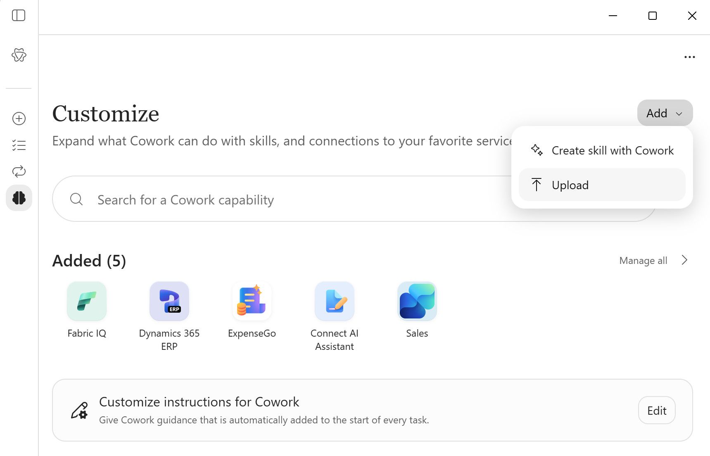
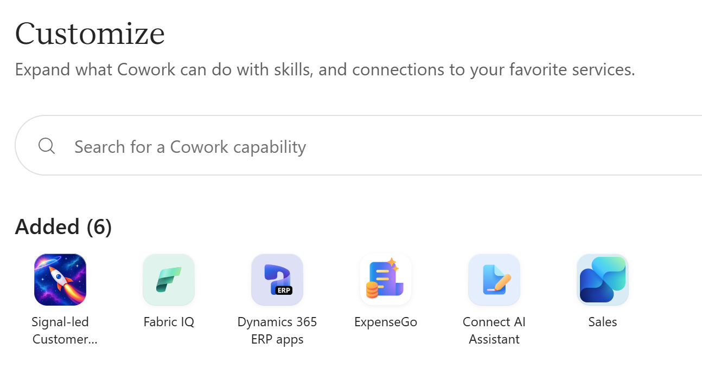
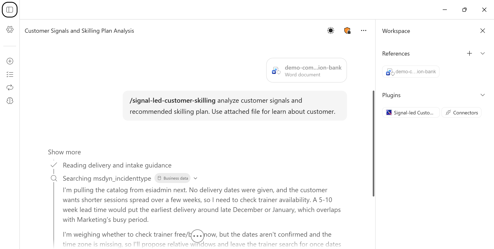

Signal-led Customer Skilling
Evidence-based, role-based skilling plans from customer files and Teams recaps - a plugin for Microsoft Copilot Cowork.
Overview
Point Signal-led Customer Skilling at a customer's materials - .docx, .pdf,
.txt, .pptx, .xlsx/.xls files, plus emails,
usage reports, and notes - and optionally your Teams meeting recaps. It runs five stages in
one go and does not stop to ask you questions:
- Collect artifacts - reads the files and recaps.
- Detect signals and summarize - customer outcome, adoption and usage signals, audiences, readiness, non-skilling blockers, and missing information, each with source and confidence (Confirmed, Probable, Unconfirmed), in a Signals Summary Word document.
- Select the path - Activate, Deepen, Protect, or Convert and Extend (alone or combined) from confirmed signals.
- Map required skills - each required skill is mapped to Microsoft Learn modules and learning paths from a catalog bundled with the plugin, with the catalog links, in a separate Skills Map Word document.
- Build the skilling plan - a Skilling Paths proposal Word document with an executive summary and an internal MTT review by audience, measurement plan, and a 60-to-90-day review.
Anything missing is listed as missing information or an assumption instead of being asked about. Debug logging is off by default - add "with debug" to your request to turn it on. The result is always a proposal for MTT and account-stakeholder validation, never an approved plan.

Install
-
Download the latest release ZIP from
GitHub Releases,
This produces
dist/signal-led-customer-skilling.zip. - Open Cowork > Customize > Plugins > Add plugin.
-
Select choose a file and pick
signal-led-customer-skilling.zip, or drag and drop it into the dialog.
Cowork's Add Plugin dialog. - Follow the on-screen installation and consent steps.
- Confirm Signal-led Customer Skilling appears in the installed plugins list.

Tenant policy must permit plugin installation. If installation is blocked, contact your administrator - this package does not bypass any policy.
Verify
Start a new Cowork conversation and try the prompt below:
/signal-led-customer-skilling analyze customer signals and recommended skilling plan for company CONTOSO.COM
Update
- Download the newest ZIP from the latest release - every update is published automatically as a new version.
- In Cowork, open Customize > Plugins, select Signal-led Customer Skilling, and upload the new ZIP to update it in place.
Maintainers: every push to main builds and publishes a new version
automatically. See INSTALL.md.